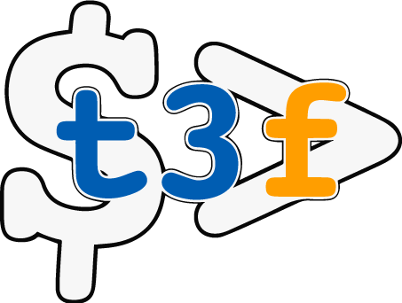

<nav class="navbar navbar-default navbar-static-top">
  <div class="container">
    <div class="navbar-header">
      <button type="button" class="navbar-toggle collapsed" data-toggle="collapse" data-target="#navbar" aria-expanded="false" aria-controls="navbar">
        <span class="sr-only">Toggle navigation</span>
        <span class="icon-bar"></span>
        <span class="icon-bar"></span>
        <span class="icon-bar"></span>
      </button>
      <a class="navbar-brand" href="#" style="padding-top:8px">
        
      </a>
    </div>
    <div id="navbar" class="navbar-collapse collapse">
      <ul class="nav navbar-nav">
        <li [routerLinkActive]="['active']"><a [routerLink]="['/dashboard']">Dashboard</a></li>
        <li [routerLinkActive]="['active']"><a [routerLink]="['/sensors']">Sensors</a></li>
        <li [routerLinkActive]="['active']"><a [routerLink]="['/applications']">Applications</a></li>
      </ul>
      <ul class="nav navbar-nav navbar-right">
        <li [routerLinkActive]="['active']"><a [routerLink]="['/settings']">Settings</a></li>
        <li><a href="#">Logout</a></li>
      </ul>
    </div>
  </div>
</nav>

<div class="container">
  <router-outlet></router-outlet>
</div>

<footer class="footer">
  <div class="container">
    <p class="text-muted">T3chFest 2017 - 10 de Febrero - ¿Plataforma casera para IoT? ¡Es posible y es barato!</p>
  </div>
</footer>